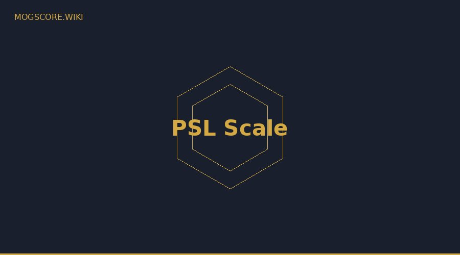

What is the PSL Scale?
PSL stands for Physical, Status, Looks — a 1–10 rating system from looksmaxxing communities used to score facial attractiveness based on measurable features. Omoggle adapts this scale for its AI scoring.
Score Breakdown
1–3: Below Average (Sub3 / Molecule)
Significant asymmetry, weak jawline, or negative canthal tilt. On Omoggle, these scores usually reflect poor camera setup rather than genuine facial features.
4–5: Low to Mid Tier Normie
The most common range. Average features, decent symmetry. A strong foundation for looksmaxxing.
6–7: HTN to Chadlite
Clearly above average. Strong positive canthal tilt, defined jawline, high symmetry. Chadlite (7.0+) is the highest occupied tier on Omoggle's leaderboard.
8–10: Chad and Slayer
Theoretical upper bounds. No confirmed Chad or Slayer player exists on Omoggle as of May 2026.
Find your PSL score with our free AI Face Analyzer.